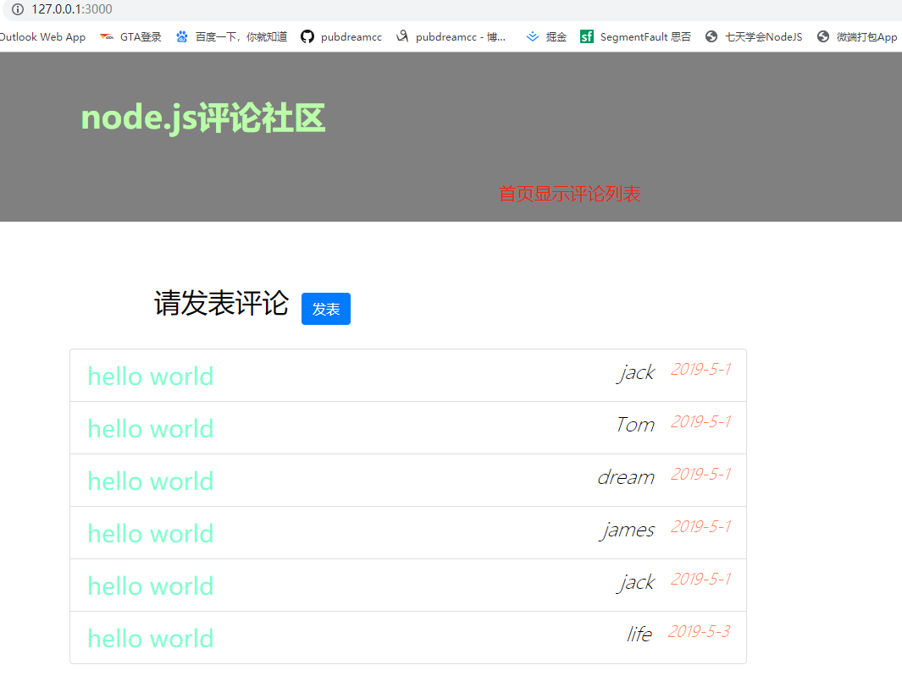
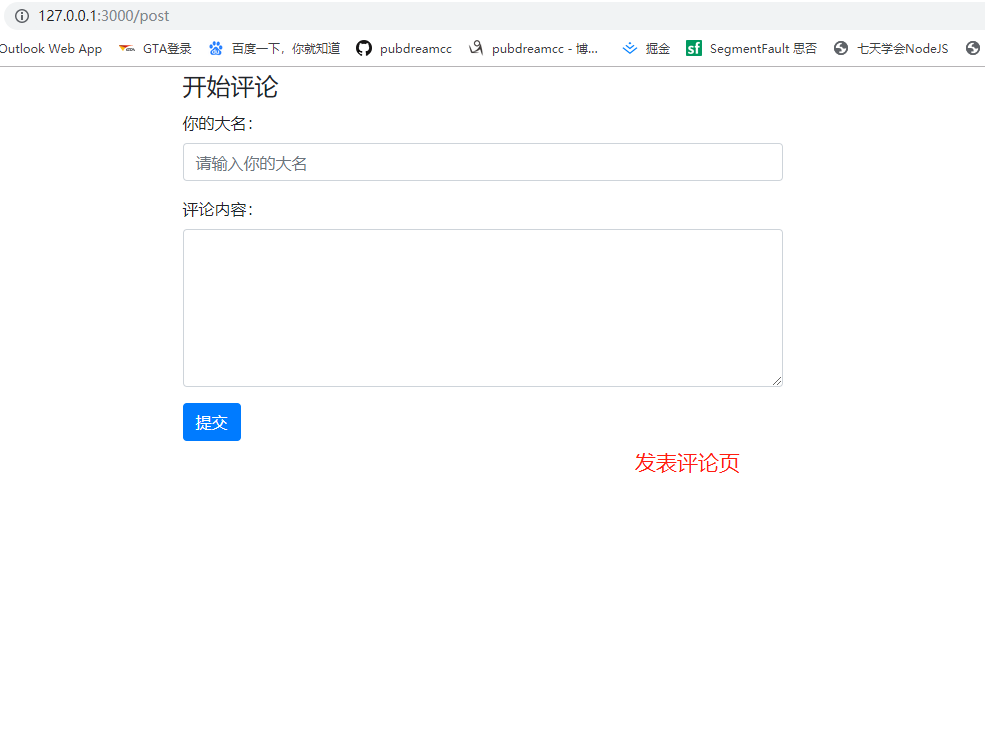
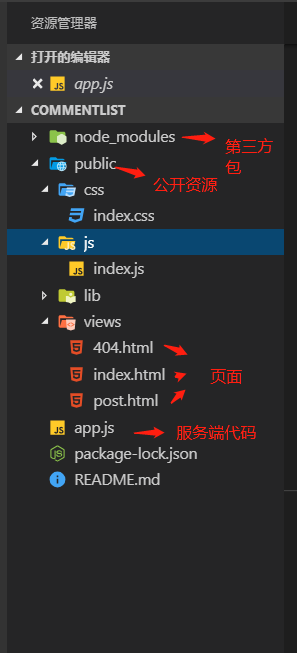
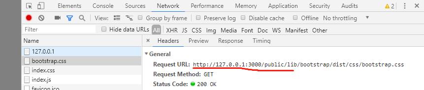
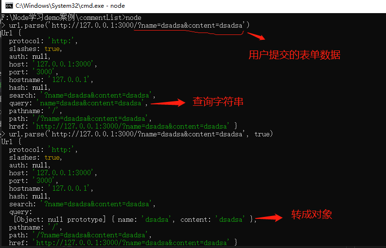
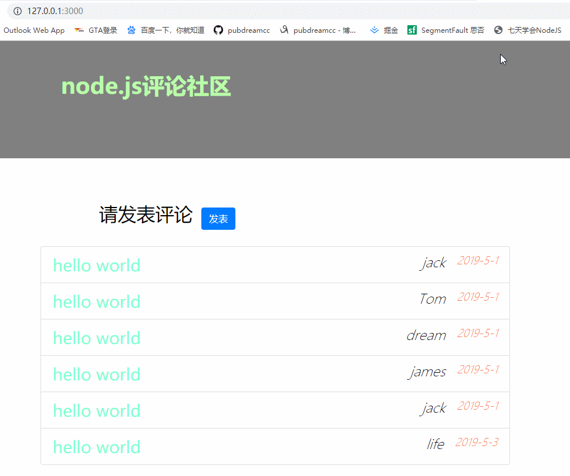

接着上一节的内容来，今天我们要完成一个用Node开发后台服务器，实现一个简单的用户评论社区。可以先看下效果图：


comment-list，在里面新建一个public文件夹，public文件夹存放我们允许客户端访问的资源，这里是公开的。app.js文件是我们服务端代码。
在index.html文件中放的是网站的首页内容，这里采用bootstrap框架快速搭建。可以先招一些假数据，以便页面渲染后看效果。核心代码：
<ul class="list-group comment-list">
{{each comments}}
<li class="list-group-item">{{$value.content}}<span class="time">{{$value.time}}</span> <span class="name">{{$value.name}}</span></li>
{{/each}}
</ul>这里采用js模板语法，等会会在服务端代码中将模板字符串渲染成真实数据。当用户访问网站根目录，服务端利用模板引擎解析渲染index.html，并且返回真实html字符串给浏览器解析。index.html会使用外链样式文件和外链脚本文件，切记这里的文件地址不能写相对路径，必须写url地址，看下面：
<link rel="stylesheet" href="/public/lib/bootstrap/dist/css/bootstrap.css">
<link rel="stylesheet" href="/public/css/index.css">
....
<script src="/public/js/index.js"></script>文件地址以/public/开头，这里的/表示请求的根路径，浏览器在发送请求的时候会自动替换成http://127.0.0.1:3000/。

404.html主要用来处理用户请求不存在的资源时，我们友情提示下即可。
post.html主要是发表评论页面，这里同样采用bootstrap快速搭建，同时也是要注意文件路径问题。这里是一个表单，用来收集用户评论的内容然后提交到后台处理。表单提交数据可以根据form标签中的action属性指定提交地址，当点击提交按钮数据会发送到指定地址，由服务端接收处理即可。核心代码如下：
<form action="/comment" method="GET" role="form" class="comment-form">
<legend>开始评论</legend>
<div class="form-group">
<label for="name">你的大名：</label>
<input type="text" name="name" class="form-control" id="name" placeholder="请输入你的大名" required maxlength="10" minlength="2">
</div>
<div class="form-group">
<label for="content">评论内容：</label>
<textarea name="content" id="content" class="form-control" rows="6" required minlength="5" maxlength="10"></textarea>
</div>
<button type="submit" class="btn btn-primary">提交</button>
</form>app.jsapp.js中引入了node中http服务构建核心模块，fs文件操作模块，urlurl地址解析模块。art-template第三方包主要用来服务端模板引擎，解析刚刚的index.html模板字符串。我们要注意url核心模块中的parse方法，它可以将一个含有查询字符串的url地址解析成一个对象，通过这个对象我们很容易得到用户表单提交过来的数据，即是查询字符串的具体内容。可以看以下演示：

通过url.parse()传入第二个参数：true，可以将query查询字符串转换成对象，便于后续获取提交的数据。
这里我们还用到了服务端重定向的概念，当用户提交表单数据后，页面会跳转至/comment地址，需要在服务端请求处理函数中设置响应状态码：302，并且通过响应头location属性告诉浏览器重定向的地址。代码如下：
res.statusCode = 302 // 设置响应状态码为302(重定向)
res.setHeader('location', '/') // 设置响应头location，告诉浏览器重定向地址app.js中核心代码如下：
http.createServer((req, res) => {
let obj = url.parse(req.url, true) // 得到url模板解析后的Url对象，传入第二个参数“true”，将form表单提交的查询字符串query转换成对象
let pathname = obj.pathname
let query = obj.query
if (pathname === '/') {
fs.readFile('./public/views/index.html', (err, data) => {
if (err) {
return res.end('404 NOT FOUND')
}
let htmlStr = template.render(data.toString(), {
comments: comments
})
res.end(htmlStr)
})
} else if (pathname.indexOf('/public/') === 0){
fs.readFile('.'+pathname, (err, data) => {
if (err) {
return res.end('404 NOT FOUND')
}
res.end(data)
})
} else if (pathname ==='/post') {
fs.readFile('./public/views/post.html', (err, data) => {
if (err) {
return res.end('404 NOT FOUND')
}
res.end(data)
})
} else if (pathname === '/comment') {
res.statusCode = 302 // 设置响应状态码为302(重定向)
res.setHeader('location', '/') // 设置响应头location，告诉浏览器重定向地址
if (query.name) {
query.time = '2015-5-10'
comments.unshift(query)
} // 放置用户手动输入'/comment'，导致query为空
res.end() // 结束响应，不能少
} else {
fs.readFile('./public/views/404.html', (err, data) => {
if (err) {
return res.end('404 NOT FOUND')
}
res.end(data)
})
}
}).listen(3000, () => {
console.log('running...')
})
完整代码可以看GitHub地址：这里
本篇文章出至于我的从零到一学习Node.js课程资料，如果大家觉得对你有帮助的话不妨给个star，我也会一直持续不断的更新相关系列教程。
项目地址：GitHub